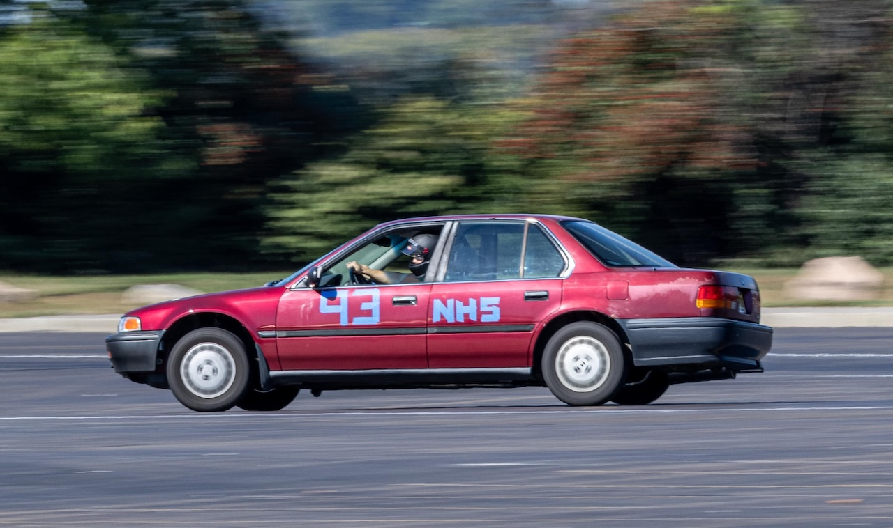
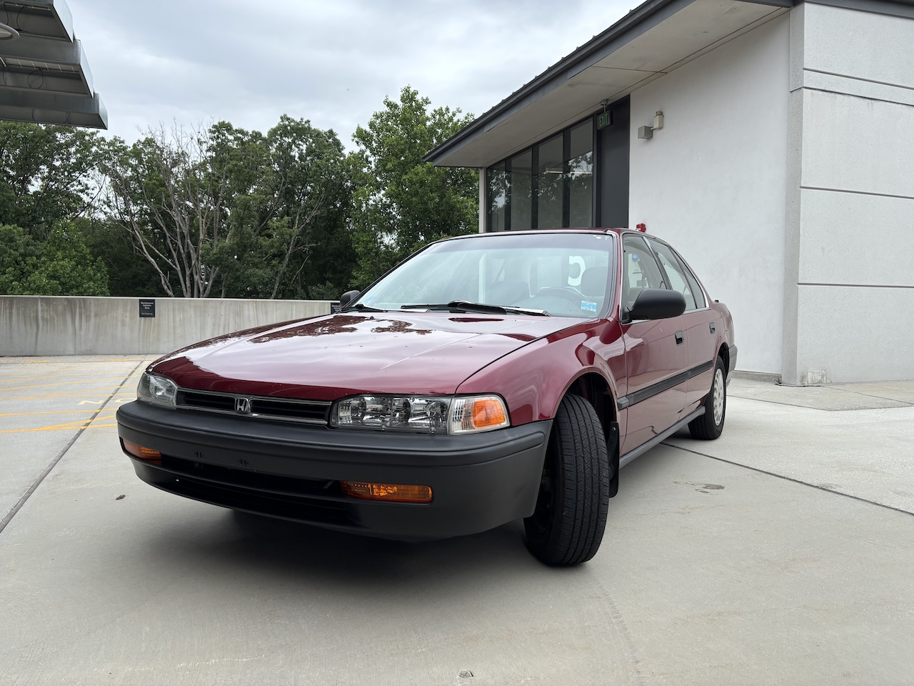

I sit here in tears over your loss, my dear old friend. You carried me through rain. You carried me through shine. You carried me through deep snow and harsh winter, never complaining nor stumbling over the task at hand. You saw the beginnings of my first relationship. You saw the ends of the same. You carried me to the interview that would yield the greatest adventure of my life. You delivered me to see the birth of my niece. You carried my band of hoodlums to the drive-in. You granted me my first and only opportunity to race. You soaked my little brother’s butt in the canyons of the Rocky Mountains.
Your service was flawless. You always started when asked. You were mocked by some. Scorned by others. Few believed in your ability to carry me safely and reliably to where I needed to be. And yet, you have outlasted those naysayers (their cars, anyways). You have risen to the occasion and never faltered. You carried that little brother through his own version of my same adventure. You made me vomit once. I got you stuck once. I have cared for you from the moment the ink dried on your title. I changed your oil on time. I had your bones repaired, your shoes replaced. Caring for you drove me to madness on occasion, but I could never hold that anger for long. The minute you roared to life with your own joyful noise, all displeasure was forgot. Your memory lives on forever in my heart. My final request to you is to carry your new charge in rain, shine, deep snow, and harsh winter in the same way: no complaints, no hesitation, no stumbles. Long may you run.
